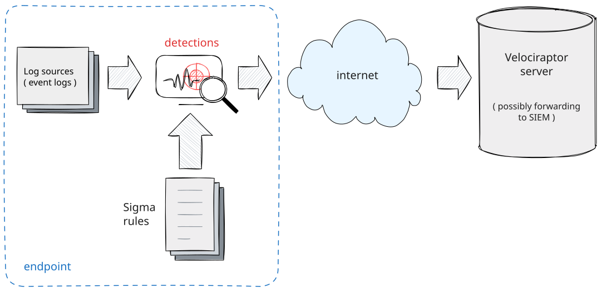

Developing Sigma Rules in Velociraptor
This post discusses some features that will be available in the upcoming 0.74 release. Although the general methodology is available in earlier releases, some of the GUI features are new.
If you want to play with these new features and provide feedback, please feel free to download the latest version for testing.
Recent versions of Velociraptor have incorporated a powerful Sigma engine built right into Velociraptor. This blog post details how you can write custom Sigma rules to leverage Velociraptor’s Sigma capabilities.
What is Sigma?
You can read more about Sigma in our Detection Engineering blog post. Since that post, Sigma has been adopted as the standard detection mechanism within Velociraptor.
To begin, let’s define some terms. In Velociraptor an Event is
simply a key/value set (AKA a Dictionary or Row). The Event can
be produced from a variety of sources as we examine below. The
producer of a particular type of events is called a Log Source,
which in Velociraptor is simply a VQL query, emitting rows as Events.
Sigma is a standard for writing Detection Rules. In this context, a
detection rule is a rule that processes some Events to produce a
Detection - i.e. a binary classification of whether the event is
noteworthy for further inspection. You can think of a Sigma rule as a
filter - events are fed into the rule and the rule filter events which
do not match and allows through those events that match the rule.
This process is illustrated in the diagram below:

Sigma Rules are pushed to the endpoint into the sigma()
plugin. Events are generated via Log Sources on the client and any
matching events are forwarded to the server.
Anatomy of a Sigma Rule
An example Sigma rule can be seen below.
title: PSExec Lateral Movement
logsource:
product: windows
service: system
detection:
selection:
Channel: System
EventID: 7045
selection_PSEXESVC_in_service:
Service: PSEXESVC
selection_PSEXESVC_in_path:
ImagePath|contains: PSEXESVC
condition: selection and (selection_PSEXESVC_in_service or selection_PSEXESVC_in_path)
This rule has several sections:
- The
logsourcesection specifies an event source to match the rule against. - The
detectionclause contains a list ofselectionsjoined into a logicalcondition. - Selections refer to abstract fields that map to actual fields
within the event. These mappings are called
Field Mappings.
The Sigma standard does not define what log sources are actually
available in any specific environment, nor does it define the specific
structure of each event. Similarly the Field Mappings are not
defined by the standard.
The executing environment maps the rule’s logsource section with a
particular VQL query that generates events. The executing environment
evaluating the rule also defines a set of Field Mappings which allow
selections to address specific fields within the event.
Sigma Models
Because Sigma does not specify exactly how to interpret the rule, we need something else to be able to properly evaluate a Sigma rule:
- Specific
Log Sourcesneed to be declared - rules can only access these pre-definedLog Sources - A set of
Field Mappingsmust be defined to map between abstract field names to concrete fields within the event object that is returned by the log source.
Therefore a rule can only operate within a specific environment and it is generally not guaranteed to evaluate the rule in a different environment.
In Velociraptor, we call the execution environment the Sigma Model. The Model defines a specific set of Log Sources and Field Mappings designed to operate in concert with Sigma Rules in a
specific context.
Sigma Rules can only be safely interpreted within the context of a
specific Sigma Model.
For example, if an organization is running a particular SIEM product
and use Sigma rules for detection, there is no guarantee that those
same rules will work in another organization running a different SIEM
product. We refer to the Sigma Model specific to each environment -
for example the Elastic Common Schema Model allows writing Sigma
rules against those logs collected by the Elastic SIEM and their
respective schema (which is well defined).
One of the main criticisms of Sigma is that it is not well defined
(unlike the Elastic Common Schema for example), making
inter-operation fairly error prone and difficult.
In Velociraptor, we avoid this issue by defining a Sigma Model
precisely and only evaluating rules within that well defined model. We
end up with various “flavors” of Sigma rules.
Velociraptor separates the implementation of the Sigma Model from
the maintainance of the Sigma Rules themselves. This makes it easier
to maintain a set of rules separately from the model itself.
For example, the Velociraptor Sigma Project maintains
Velociraptor.Hayabusa.Ruleset artifact which is a port of the Sigma
rules maintained by the Hayabusa project to the Windows.Sigma.Base
triage model.

This allows users to easily leverage existing model to write and maintain their own custom set of rules.
Writing custom Sigma Rules
While it is common to use curated rule sets for triage, this article explains the process of developing and testing custom rules.
Below is a worked example of applying the Log Triage Model to
develop a Sigma Rule to detect misuse of the BITS service.
The Windows.Sigma.Base Log Triage Model
The Windows.Sigma.Base Model, is used for triaging event log files on Windows:
-
The model defines log sources that access static Event Log Files on a Windows System.
-
The model defines a set of
Field Mappingsto access common fields within the event log messages, as extracted by theLog Sources.
This model is useful for rapidly triaging event logs on an endpoint in order to quickly surface relevant events. You can view the details of this Sigma Model on the Velociraptor Sigma project’s pages

The reference page helps us write the Sigma rules by documenting exactly which log sources are available in this model and giving some example events produced by these models.
Although Sigma is in theory an interchange format between different SIEMs products, in practice it is difficult to port rules between different evaluation engines (Or different Sigma Models):
- There is no guarantee that the rule’s
Log Sourceis actually available in a different model. - Fields may not exist in other models.
- There may not be field mappings for the same field in different models, or the mappings may clash with other fields.
To achieve portability between SIEM systems we need to develop a Sigma Model to fully emulate another environment to be able to directly consume the same rules.
In Velociraptor we are less concerned with portability and more
concerned with having Sigma rules as a way of implementing an easy to
use and powerful detection engine. Velociraptor defines a range of
different Sigma Models, some are defined with the intention to
directly consume a large set of rules from another project (For example
the
Windows.Sigma.Base
model was written to consume Hayabusa rules for the
Windows.Hayabusa.Ruleset
artifact), while others are defined to make powerful telemetry events
available to rule writers (For example the
Windows.ETW.Base
model exposes ETW sources not usually available in centralized server
based SIEM architectures).
Developing custom detection rules.
One of the challenges with rapidly developing detection rules is iterating through the process of generating events, inspecting the produced events, updating the rules and applying the rule on the event sources.
A simple approach to developing detection rules is to:
- Find an exploit or specific tool to emulate the specific attack on the target platform. For example, one may use Metasploit or Atomic Red Team to emulate a particular attack on the target platform (e.g. Exchange Server).
- While the attack is performed, ensure sensors are enabled and forwading events to the target SIEM.
- Implement the detection rules on the SIEM
- Examine if the rule triggers. If the rule does not trigger go to step 1 and try to figure out why it does not trigger.
- Finally try to figure out how to tweak the original exploit to ensure the rule may trigger in slight variations of the attack (e.g. slightly different command line). This step is essential to make the detection robust.
The more complicated the detection pipeline (with event forwarders, data lakes, matching engines etc) the more complicated it is to iterate through the above steps.
Testing the rules in future also becomes impractical as it requires setting up a large infrastructure footprint to be able to successful run the exploit. If the original vulnerability is patched, running the exploit may not work and an older unpatched system is required.
To develop detection rules effectively we must separate the event generation step and the event detection step. To generate the raw events, we must run the exploit on a real system. However to test detection rules, we can simply replay the events into the detection engine, testing detection rules in isolation.

The Sigma Model already supports this kind of workflow. The model
defines a set of Log Sources which emit raw events. We can then
replay these events back into the detection engine to rapidly develop
the Sigma Rule.
The workflow is illustrated above:
-
Recording Mode: We start off by recording the relevant events on the detected platform. We use the relevant Sigma Model’s Log Source to record relevant events into JSON files. This step must necessarily be run on the target platform as it records real life behavior. -
Replay/Test Mode: In this mode we can replay the JSON files collected previously back into the sameSigma Engine. Except that this time, instead of using the real log source, we substitute a mock log source which replays events back from JSON files. This step can be done on any platform since the events are isolated.In this mode we are able to quickly iterate over the same events and even enable debugging mode which assists in figuring out why an event would match a specific condition.
-
Detection Mode: Once the rules are validated we can deploy them in real life and ensure they match on the real log sources. In production the proper log sources are used to feed live events from the system to theSigma Enginewith the validatedSigma Rules
Example Workflow: Detecting BITS Client Activity
To illustrate the process I will develop a Sigma rule to detect suspicious BITS client activity. BITS is a windows service which is often misused to download malware onto the endpoint.
The service may be abused using the bitsadmin command:
bitsadmin.exe /transfer /download /priority foreground https://www.google.com c:\Users\Administrator\test.ps1
To start off we will use the Windows.Sigma.Base model, which
inspects the windows event log files. We have already seen the BITS
client log source in this model previously and know that the events
are read from
C:\Windows\System32\WinEvt\Logs\Microsoft-Windows-Bits-Client%4Operational.evtx
Let’s take a look at the raw events in this file using the event viewer.

The relevant event I am interested in is event ID 59 - which tells me the URL where the file was downloaded from. Since the service is used legitimately by the system there are many URLs mentioned which are not suspicious. My rule will need to exclude those URLs to only concentrate on the suspicious uses.
Step 1: Capture Test Events
My first step is to collect relevant events from the relevant Sigma Model. I do this by collecting the
Windows.Sigma.Base.CaptureTestSet artifact. This companion artifact
to the Windows.Sigma.Base artifact uses the same log sources but
simply records the raw events.

In this case I will only collect events from the bits_client log
source and only those events that mention URLs. I can time box the
events to only collect recent events if I want but in this case I will
collect from all available time to get a good selection of URLs used.
Once the collection is done (I can collect this remotely from the server), I have the raw events available. I can download the raw JSON from the GUI table view, after possibly filtering them further using the GUI.

I can pre-filter these events in the notebook to see what is
representative of normal behavior and what is unusual. In this case, I
identify that event ID 59 is associates with transfer job started for
example BITS started the Chrome Component Updater transfer job that is associated with the XXX.
I will extract the domain name part from the URL and group by it so I can see all unique URLs collected.

In practice I can collect a more representative set of these events by collecting the artifact using a hunt (which can include the entire deployment). This will give me a more representative set of download URLs found in the environment so I can reduce false positives.
Step 2: Developing rules with Sigma Studio
To effectively develop rules, one must be able to iterate quickly by
applying the rules against the collected events. To assist with this
process, I will use the Sigma Studio notebook template.

Velociraptor notebooks are interactive documents allowing users to
dissect and analyse data using VQL. The Sigma Studio template is
specifically designed to make manipulation of Sigma Rules simpler.

The notebook has a number of important sections:
- The Sigma Editor button launches a dedicated editor to edit Sigma rules.
- By clicking the
Notebook Uploadsbutton you can upload the test events described in Step 1 above. - Once these raw events are uploaded to the cell, the bottom table will render the raw events, while the top table renders only those events matching the rules.
I will start off by uploading the test events I collected previously.

Editing the Sigma Rules
I will launch the Sigma Editor by clicking on the button.

Within the editor I select the Windows.Sigma.Base model. Next I
select the bits-client log source from the pull down. The editor
will show me available log sources within this model.
The editor displays so documentation about the log source and presents a syntax highlighted Sigma text editor populated with a template rule. For those not familiar with Sigma, comments help to guide the user into filling in the desired fields.
For this detection, I will search for event ID 59, which reveal the URL associated with the bits job. However, I will suppress jobs from URLs accessing specific domains.
Pressing ? will suggest any of the field mappings defined within
the model.

In this case I know that EventID is a field mapping to extract the
log message’s Event ID, and the Url field mapping will extract the
url field from the EventData
The rule I came up with is:
title: Suspicious BITs Jobs
logsource:
product: windows
service: bits-client
detection:
select_event:
EventID: 59
allowed_urls:
Url|re:
- edgedl.me.gvt1.com
condition: select_event and not allowed_urls
details: "Bits Job %JobTitle% accessed URL %Url%"
-
The rule consumes events from the
windows/bits-clientlog source (which in this model ends up reading the events from theC:\Windows\System32\WinEvt\Logs\Microsoft-Windows-Bits-Client%4Operational.evtxlog file. -
There are two selections:
- If the event id equal to 59
- Does the URL match one of the specified regular expressions
-
Finally the rule will match only if the first selection is true and the second selection is false (i.e. only event 59 which do not match one of the allowed urls).
-
The
detailsfield specified a message that will be emitted when the rule matches. This allows us to specify a simple human readable alert to explain what the rule has detected. You can add field interpolations enclosed in%to the message.
When I save the rule, the notebook will be refreshed and recalculated using the new rule applied on the sample events I uploaded previously.

You can see a detailed description of why the rule matched. For rules with many selections and complex condition clauses this allows us to inspect each condition in isolation.
Unavailable Field Mappings
Sigma strictly requires field mappings to already exist in the model so they can be referenced. This makes it impossible to access fields in the event which have not previously been defined within the model.
To solve this problem, Velociraptor’s Sigma implementation allows, as
a special case, to use field names with . separating fields within
the event. The above rule can be written without any field mappings
as:
title: Suspicious BITs Jobs
logsource:
product: windows
service: bits-client
detection:
select_event:
System.EventID.Value: 59
allowed_urls:
EventData.url|re:
- edgedl.me.gvt1.com
condition: select_event and not allowed_urls
details: "Bits Job %EventData.name% accessed URL %EventData.url%"
It is better to use model field mappings if they are already defined in the model because this makes its easier to port the rule to other models, however if one is not available you can fall back to this method of referencing fields directly.
Step 3: Test the rule on the fleet.
Now that we have a working Sigma rule we can apply this rule to the wider fleet to assess the rule’s false positive rate. As we apply the rule more widely we are likely to discover more legitimate uses of the BITS service and so we might need to add more URLs to the allow list.


Conclusions
This Blog post explains the rational behind separating Sigma Rules
into Sigma Models. Velociraptor’s Sigma implementation allows for
the creation of many specialized Sigma Models which can operate in
completely different environments.
For example, the Windows.Sigma.Base model operates on parsing of
event log files on the endpoint (triaging existing logs). On the other
hand the Windows.Sigma.BaseEvents model watches log files in real
time to generate Sigma based events on current activity.
Similarly the Linux.Sigma.EBPF model surfaces real time telemetry
collected from EBPF sensors on Linux and makes these available to
Sigma rule authors. This flexibility allows applying Sigma in many
different scenarios, making it a power technique.
The main difficulty with writing Sigma rules is being able to iterate through generating event data, applying the Sigma Rule, debugging the rule and testing the detection at scale.
This post describes a new Sigma rule writing workflow that allows to rapidly iterate through the detection process, then apply the test to the entire fleet quickly to test false positive rates.